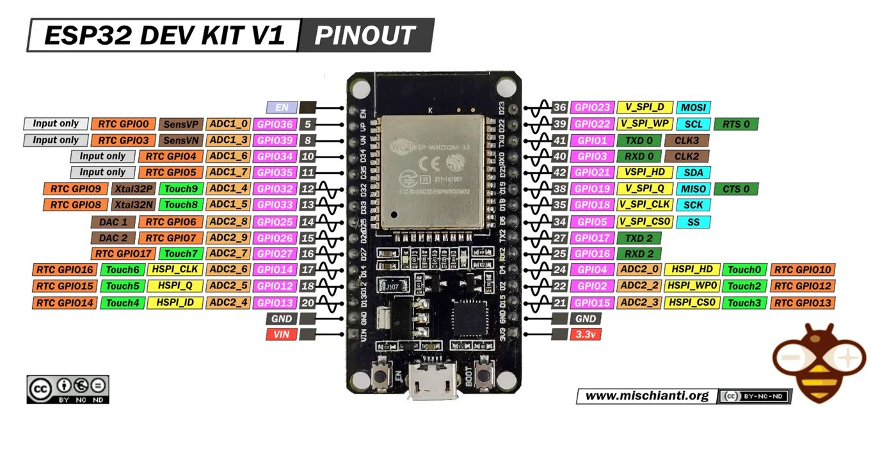
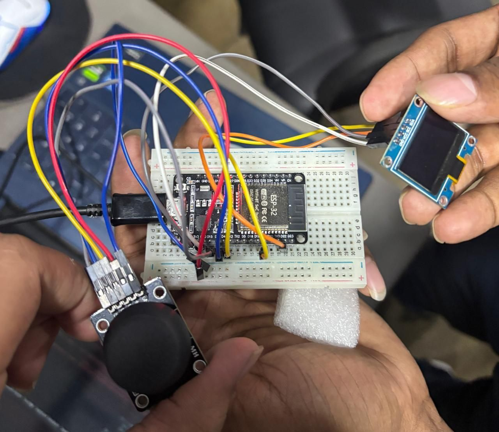
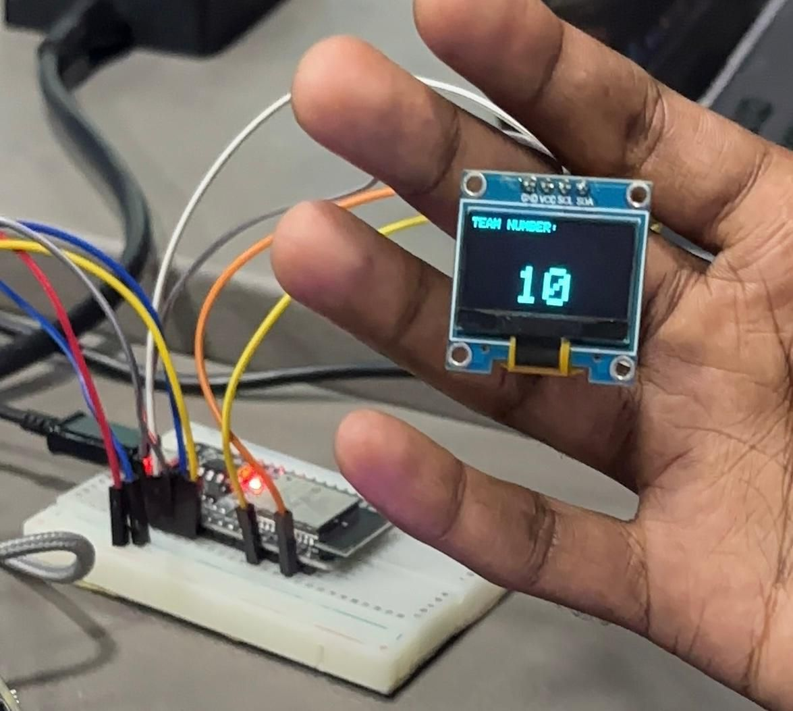
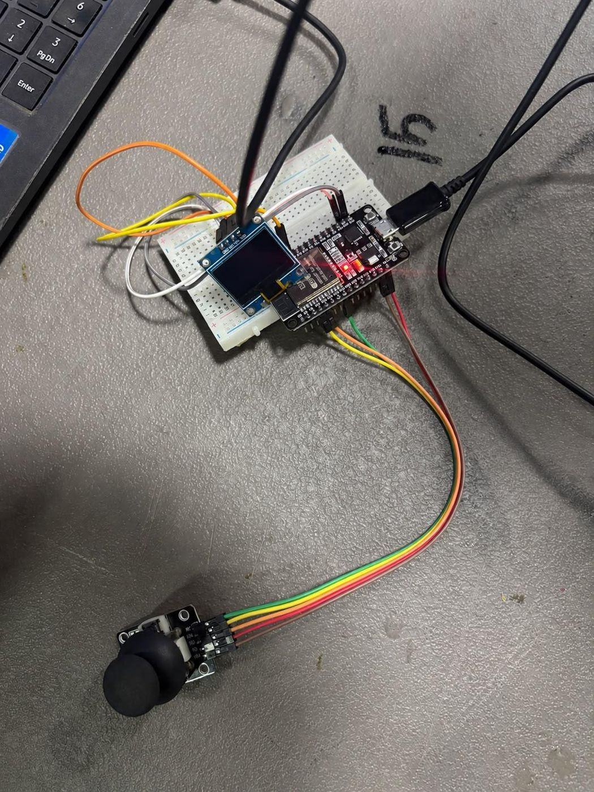
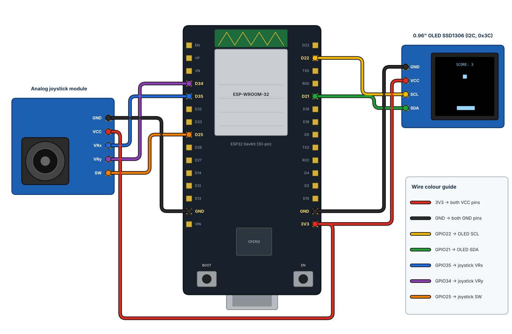
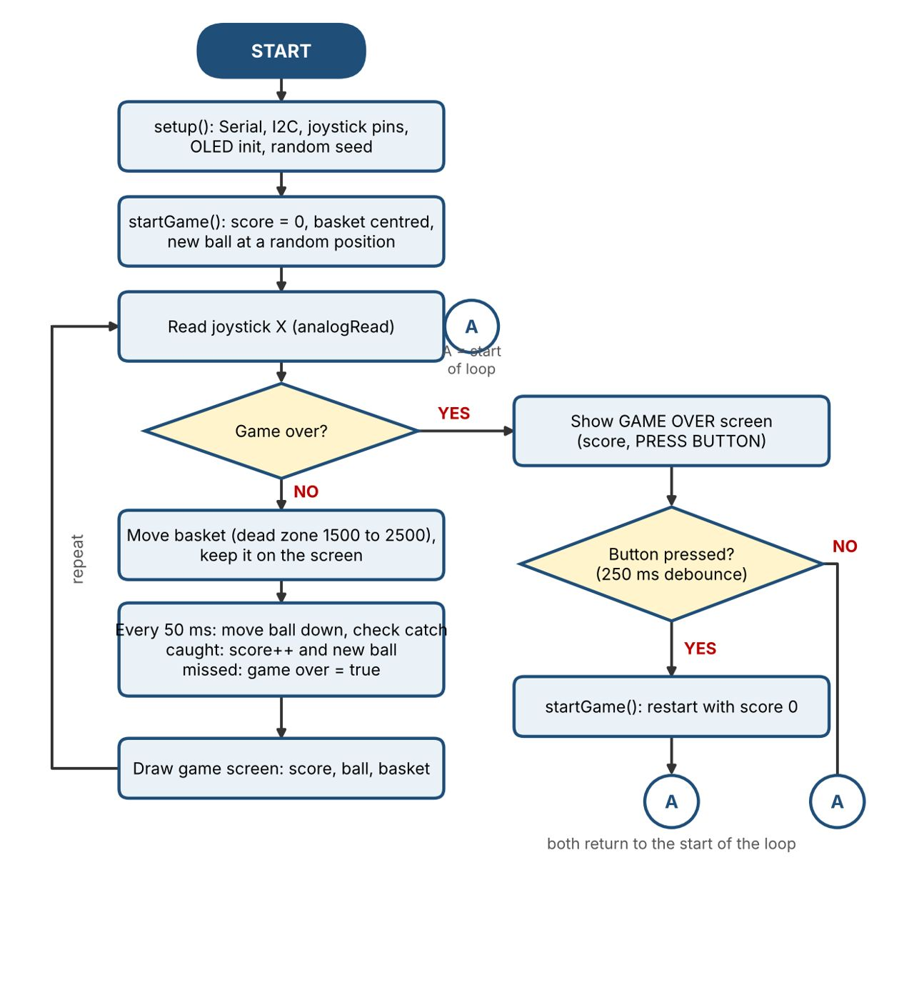
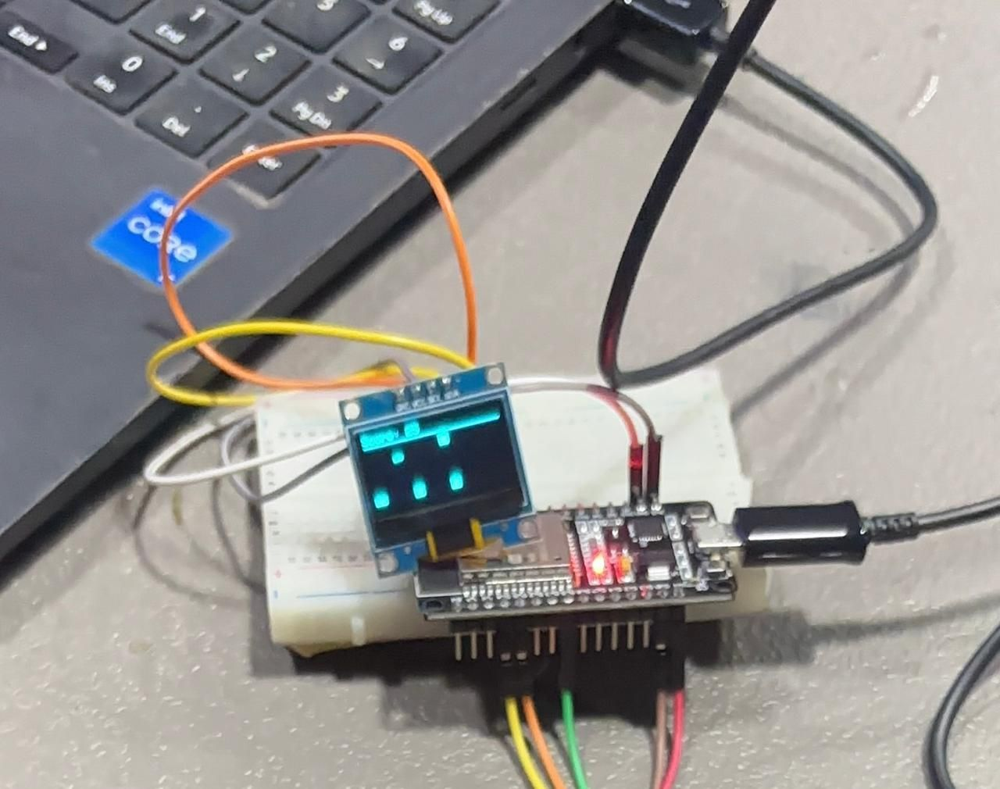
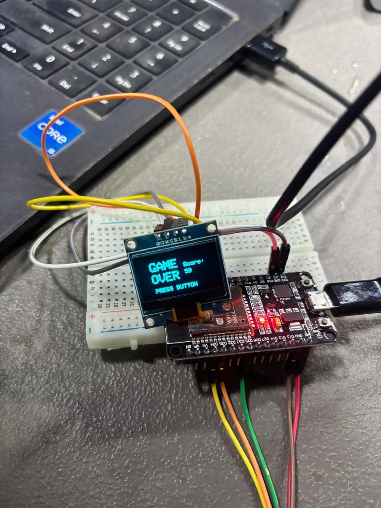

Date
14 October 2026
Hardware
ESP32 30-pin board, 0.96-inch SSD1306 I2C OLED, 2-axis analog joystick
Software
Arduino IDE, ESP32 board package, OLED libraries
01ESP32 Architecture Overview
The ESP32 is a low-cost, low-power microcontroller with integrated Wi-Fi and Bluetooth capabilities. The main characteristics of the board are listed below.
Dual-core CPU (Xtensa 32-bit LX6) running at up to 240 MHz.
4 MB Flash memory (can be expanded up to 16 MB).
520 KB SRAM for program execution.
802.11 b/g/n Wi-Fi and Bluetooth 4.2/BLE.
12-bit ADC (Analog-to-Digital Converter) with 16 channels.
8-channel DAC (Digital-to-Analog Converter).
2 SPI, 2 I2C, 2 UART and 1 CAN interfaces.
PWM outputs on GPIO pins.
02ESP32 30-Pin Board Pin Diagram & Characteristics
2.1 Pin Configuration Overview
| Pin # | GPIO | Function | Notes |
|---|---|---|---|
| 1 | GND | Ground | Ground reference |
| 2 | GPIO3 | RX0 | Serial receive |
| 3 | GPIO1 | TX0 | Serial transmit |
| 4 | GPIO22 | SCL | I2C clock (OLED) |
| 5 | GPIO21 | SDA | I2C data (OLED) |
| 6 | GPIO19 | MISO | SPI receive |
| 7 | GPIO23 | MOSI | SPI transmit |
| 8 | GPIO18 | CLK | SPI clock |
| 9 | GPIO5 | GPIO5 | General I/O |
| 10 | 3.3V | 3V3 | Power supply |
| 11 | GND | GND | Ground reference |
| 12 | GPIO17 | GPIO17 | General I/O |
| 13 | GPIO16 | GPIO16 | General I/O |
| 14 | GPIO4 | GPIO4 | General I/O |
| 15 | GPIO0 | GPIO0 | Boot pin (pull-up) |
| 16 | GPIO2 | GPIO2 | General I/O |
| 17 | GPIO15 | GPIO15 | General I/O |
| 18 | GND | GND | Ground reference |
| 19 | GPIO13 | GPIO13 | General I/O |
| 20 | GPIO12 | GPIO12 | General I/O |
| 21 | GPIO14 | GPIO14 | General I/O |
| 22 | GPIO27 | GPIO27 | General I/O |
| 23 | GPIO26 | GPIO26 | DAC2 / ADC |
| 24 | GPIO25 | GPIO25 | DAC1 / ADC |
| 25 | GPIO33 | GPIO33 | ADC5 |
| 26 | GPIO32 | GPIO32 | ADC4 |
| 27 | GPIO35 | GPIO35 | ADC7 (Joystick X) |
| 28 | GPIO34 | GPIO34 | ADC6 (Joystick Y) |
| 29 | GND | GND | Ground reference |
| 30 | 3.3V | 3V3 | Power supply |

2.2 Key Pin Characteristics
3.3 V logic level: GPIO pins operate at 3.3 V and are not 5 V tolerant.
I2C: GPIO22 = SCL and GPIO21 = SDA.
ADC inputs used by this project: GPIO35 (Joystick X) and GPIO34 (Joystick Y).
GPIO34 and GPIO35 are input-only pins, which makes them suitable for analog joystick axes.
GPIO0 is the boot-mode pin and must be HIGH for normal operation.
03Installing Arduino IDE
Download Arduino IDE from the official Arduino software page.
Install the latest supported Arduino IDE version for Windows, macOS or Linux.
On Windows, allow USB-driver installation when prompted.
Launch Arduino IDE and confirm that the main editor window opens correctly.
04Downloading ESP32 Library
Locate Additional Boards Manager URLs.
Paste the Espressif ESP32 package index link into the Additional Boards Manager URLs box and click OK.
Search for “ESP32”, select “ESP32 by Espressif Systems”, and install the package.
05Selecting Board and COM Port
5.1 Board Settings
| Setting | Recommended value |
|---|---|
| Board | ESP32 Dev Module |
| CPU Frequency | 240 MHz |
| Flash Size | 4 MB |
| Upload Speed | 921600 baud (reduce if uploads are unreliable) |
5.2 Selecting the Port
Connect the ESP32 to the computer using a data-capable USB cable.
Select the COM port that appears when the ESP32 is connected (for example, COM3 or COM4 on Windows).
If the board is not detected, install the appropriate USB driver and try another USB cable.
06Integrating ESP32 with OLED Display
6.1 Hardware Connections
| OLED Pin | ESP32 Pin | Connection / Purpose |
|---|---|---|
| VCC | 3.3V | Power |
| GND | GND | Ground |
| SCL | GPIO22 | I2C clock |
| SDA | GPIO21 | I2C data |

6.2 Required Libraries
Adafruit SSD1306 - by Adafruit Industries
Adafruit GFX Library - by Adafruit Industries
6.3 OLED Test Program
#include <Wire.h>
#include <Adafruit_GFX.h>
#include <Adafruit_SSD1306.h>
#define SCREEN_WIDTH 128
#define SCREEN_HEIGHT 64
#define OLED_RESET -1
#define OLED_ADDRESS 0x3C
Adafruit_SSD1306 display(SCREEN_WIDTH, SCREEN_HEIGHT, &Wire, OLED_RESET);
void setup() {
Serial.begin(115200);
Wire.begin(21, 22);
if (!display.begin(SSD1306_SWITCHCAPVCC, OLED_ADDRESS)) {
Serial.println("OLED initialization failed.");
while (true) {}
}
display.clearDisplay();
display.setTextSize(1);
display.setTextColor(SSD1306_WHITE);
display.setCursor(0, 0);
display.println("OLED Connected!");
display.display();
}
void loop() {
delay(1000);
}07Task 1: Display Team Number on OLED
7.1 Objective
Display a team number on the OLED at startup and keep it visible.
7.2 Hardware Required
ESP32 30-pin development board
0.96-inch 128×64 I2C OLED (SSD1306), normally using address 0x3C
Jumper wires and USB cable
Arduino IDE with Adafruit SSD1306 and Adafruit GFX Library installed
No joystick is required for Task 1.
7.3 Complete Task 1 Code
#include <Wire.h>
#include <Adafruit_GFX.h>
#include <Adafruit_SSD1306.h>
#define SCREEN_WIDTH 128
#define SCREEN_HEIGHT 64
#define OLED_RESET -1
#define OLED_ADDRESS 0x3C
Adafruit_SSD1306 display(SCREEN_WIDTH, SCREEN_HEIGHT, &Wire, OLED_RESET);
const char* TEAM_NUMBER = "10";
void setup() {
Serial.begin(115200);
Wire.begin(21, 22);
if (!display.begin(SSD1306_SWITCHCAPVCC, OLED_ADDRESS)) {
Serial.println("SSD1306 allocation failed.");
while (true) {}
}
display.clearDisplay();
display.setTextColor(SSD1306_WHITE);
display.setTextSize(1);
display.setCursor(0, 0);
display.println("TEAM NUMBER:");
display.setTextSize(4);
display.setCursor(40, 28);
display.println(TEAM_NUMBER);
display.display();
Serial.println("Team Number Display Initialized!");
}
void loop() {
delay(1000);
}
Video Demonstration Link: CLICK HERE
7.4 Expected Output
The OLED should show a TEAM NUMBER header and the selected team number in a larger font. The output photo and video link are given in Section 7.3.
08Integrating ESP32 with Joystick
8.1 Corrected Joystick Wiring
| Joystick Pin | ESP32 Pin | Purpose |
|---|---|---|
| VCC | 3.3V | Joystick power |
| GND | GND | Common ground |
| VRx (X-axis) | GPIO35 | Analog X input; used by the game |
| VRy (Y-axis) | GPIO34 | Analog Y input; reserved for future use |
| SW (Button) | GPIO25 | Digital button; INPUT_PULLUP |

8.2 Joystick Test Program
#define JOY_X 35
#define JOY_Y 34
#define JOY_SW 25
void setup() {
Serial.begin(115200);
pinMode(JOY_X, INPUT);
pinMode(JOY_Y, INPUT);
pinMode(JOY_SW, INPUT_PULLUP);
}
void loop() {
int x = analogRead(JOY_X);
int y = analogRead(JOY_Y);
int button = digitalRead(JOY_SW);
Serial.print("X: ");
Serial.print(x);
Serial.print(" | Y: ");
Serial.print(y);
Serial.print(" | Button: ");
Serial.println(button == LOW ? "PRESSED" : "RELEASED");
delay(100);
}Open Serial Monitor at 115200 baud. Moving the joystick should change the X/Y ADC values. Pressing the joystick button should change SW from HIGH to LOW.
09Task 2: Escape-the-Falling-Ball Game
9.1 Objective
Create an interactive game in which a ball falls from the top of the OLED and the player moves a basket at the bottom using the joystick X-axis. The score increases when the ball is caught; missing the ball ends the game.
9.2 Final Hardware & Pin Configuration
| Component | ESP32 connection | Purpose / code |
|---|---|---|
| OLED VCC | 3.3V | OLED power |
| OLED GND | GND | Common ground |
| OLED SCL | GPIO22 | I2C clock; Wire.begin(21, 22) |
| OLED SDA | GPIO21 | I2C data; Wire.begin(21, 22) |
| Joystick VCC | 3.3V | Joystick power |
| Joystick GND | GND | Common ground |
| Joystick VRx (X) | GPIO35 | Analog input; JOY_X |
| Joystick VRy (Y) | GPIO34 | Analog input; JOY_Y |
| Joystick SW | GPIO25 | Digital input; JOY_SW with INPUT_PULLUP |

9.3 Game Features
Ball starts at a random horizontal position near the top.
Joystick left/right movement controls the basket.
Each successful catch adds 1 point.
Missing the ball changes the game to GAME OVER.
Pressing the joystick button after GAME OVER restarts the game.
The game uses a dead-zone around the joystick center to reduce unwanted basket movement.
9.4 Game Concept, Objective and Rules
Escape-the-Falling-Ball is a catch-the-ball game for the 128×64 OLED. A ball falls from the top of the screen and the player slides a basket along the bottom edge with the joystick to catch it. The objective is to catch as many balls as possible without missing one.
The ball starts at a random horizontal position at the top and falls straight down.
Each ball caught scores 1 point, and a new ball starts at once.
If a ball reaches the bottom of the screen without being caught, the game is over.
The final score stays on the GAME OVER screen until the joystick button is pressed.
Pressing the joystick button after GAME OVER resets the score to 0 and starts a new game.
9.5 How the Player Interacts
| Player action | Joystick input | What happens in the game |
|---|---|---|
| Move basket left | Push stick left (X below 1500) | Basket moves 3 px left, stopping at the left edge |
| Move basket right | Push stick right (X above 2500) | Basket moves 3 px right, stopping at the right edge |
| Hold still | Stick near centre (1500 to 2500) | Basket stays where it is (dead zone) |
| Restart | Press the joystick button (SW) | Only works on the GAME OVER screen; score resets to 0 |
9.6 Hardware Components Used
| Component | Specification | Role in the game |
|---|---|---|
| ESP32 30-pin board | Dual-core, 3.3 V logic, 12-bit ADC | Runs the game and reads the joystick |
| OLED display | 0.96-inch, 128×64, SSD1306, I2C (0x3C) | Shows the basket, ball, score and GAME OVER screen |
| Analog joystick module | 2-axis (VRx, VRy) with push button (SW) | Player input: basket movement and restart |
| Jumper wires and USB cable | Male-to-female / male-to-male | Connections and programming / power |
| Arduino IDE | Adafruit SSD1306 and Adafruit GFX libraries | Writing and uploading the code |
9.7 How the Joystick Works
The joystick contains two potentiometers, one for each axis, and a push button. Each potentiometer acts as a voltage divider between 3.3 V and GND, so the voltage on its output pin changes with the position of the stick. The ESP32 reads this voltage with its 12-bit ADC and gets a number from 0 to 4095, which is about 2048 when the stick is centred.
VRx (GPIO35) gives the left/right position and is used to move the basket.
VRy (GPIO34) is read in the joystick test program and available for further games.
SW (GPIO25) is set to INPUT_PULLUP, so it reads HIGH normally and LOW when pressed. It restarts the game.
| ADC reading (X axis) | Interpretation | Basket action |
|---|---|---|
| 0 to 1499 | Stick pushed left | Move left |
| 1500 to 2500 | Dead zone (stick centred) | No movement |
| 2501 to 4095 | Stick pushed right | Move right |
9.8 Circuit Diagram and Pin Connections
Both modules run from the 3V3 pin of the ESP32. The OLED uses the I2C pins and the joystick uses two input-only ADC pins and one digital pin, as shown below and in the pin table in Section 9.2.

Figure: Wiring diagram of the ESP32 30-pin board with the SSD1306 OLED and the joystick module
10Task 2 (continued): Complete Code
#include <Wire.h>
#include <Adafruit_GFX.h>
#include <Adafruit_SSD1306.h>
#define SCREEN_WIDTH 128
#define SCREEN_HEIGHT 64
#define OLED_RESET -1
#define OLED_ADDRESS 0x3C
Adafruit_SSD1306 display(SCREEN_WIDTH, SCREEN_HEIGHT, &Wire, OLED_RESET);
// Joystick pins
const int JOY_X = 35; // VRx
const int JOY_Y = 34; // VRy - reserved
const int JOY_SW = 25; // Push button
// Joystick calibration / dead zone
const int JOY_LEFT = 1500;
const int JOY_RIGHT = 2500;
// Basket
const int BASKET_Y = 56;
const int BASKET_WIDTH = 20;
const int BASKET_HEIGHT = 5;
int basketX = 54;
// Ball
const int BALL_SIZE = 4;
int ballX = 0;
int ballY = 12;
const int BALL_SPEED = 2;
// Game state
int score = 0;
bool gameOver = false;
unsigned long lastBallMove = 0;
unsigned long lastButtonTime = 0;
void startGame();
void drawGame();
void drawGameOver();
void setup() {
Serial.begin(115200);
Wire.begin(21, 22);
pinMode(JOY_X, INPUT);
pinMode(JOY_Y, INPUT);
pinMode(JOY_SW, INPUT_PULLUP);
if (!display.begin(SSD1306_SWITCHCAPVCC, OLED_ADDRESS)) {
Serial.println("OLED not found!");
while (true) {}
}
randomSeed(micros());
startGame();
}
void loop() {
// Read horizontal joystick axis
int x = analogRead(JOY_X);
if (!gameOver) {
// Move basket only when outside the dead zone
if (x < JOY_LEFT) {
basketX -= 3;
} else if (x > JOY_RIGHT) {
basketX += 3;
}
// Keep basket on the screen
basketX = constrain(basketX, 0, SCREEN_WIDTH - BASKET_WIDTH);
// Move the ball at a fixed interval
if (millis() - lastBallMove >= 50) {
lastBallMove = millis();
ballY += BALL_SPEED;
// Check collision with basket
bool caught =
(ballY + BALL_SIZE >= BASKET_Y) &&
(ballY <= BASKET_Y + BASKET_HEIGHT) &&
(ballX + BALL_SIZE >= basketX) &&
(ballX <= basketX + BASKET_WIDTH);
if (caught) {
score++;
ballX = random(2, SCREEN_WIDTH - BALL_SIZE - 2);
ballY = 12;
}
// Ball missed
if (ballY > SCREEN_HEIGHT) {
gameOver = true;
}
}
drawGame();
} else {
drawGameOver();
// Active-low joystick button with simple debounce
if (digitalRead(JOY_SW) == LOW &&
millis() - lastButtonTime > 250) {
lastButtonTime = millis();
startGame();
}
}
delay(5);
}
void startGame() {
basketX = (SCREEN_WIDTH - BASKET_WIDTH) / 2;
score = 0;
gameOver = false;
lastBallMove = millis();
ballX = random(2, SCREEN_WIDTH - BALL_SIZE - 2);
ballY = 12;
display.clearDisplay();
display.display();
}
void drawGame() {
display.clearDisplay();
display.setTextSize(1);
display.setTextColor(SSD1306_WHITE);
// Score
display.setCursor(0, 0);
display.print("Score: ");
display.println(score);
// Separator
display.drawLine(0, 9, SCREEN_WIDTH - 1, 9, SSD1306_WHITE);
// Ball
display.fillCircle(ballX + 2, ballY + 2, 2, SSD1306_WHITE);
// Basket
display.fillRect(
basketX, BASKET_Y,
BASKET_WIDTH, BASKET_HEIGHT,
SSD1306_WHITE
);
display.display();
}
void drawGameOver() {
display.clearDisplay();
display.setTextColor(SSD1306_WHITE);
display.setTextSize(2);
display.setCursor(12, 10);
display.println("GAME");
display.setCursor(12, 30);
display.println("OVER");
display.setTextSize(1);
display.setCursor(75, 18);
display.print("Score:");
display.setCursor(75, 30);
display.println(score);
display.setCursor(18, 54);
display.println("PRESS BUTTON");
display.display();
}11Task 2 (continued): Game Operation and Explanation
9.9 Program Logic
| Function / block | Role |
|---|---|
| setup() | Initializes Serial, I2C, joystick pins, OLED and random-number generation. |
| startGame() | Resets score, basket position, ball position and game state. |
| Joystick reading | Reads GPIO35. Values below 1500 move left; values above 2500 move right; the center range is a dead zone. |
| Ball update | Every 50 ms the ball moves downward by 2 pixels. |
| Collision detection | Checks overlap between the ball and basket. |
| Score | Increases by 1 for each successful catch. |
| GAME OVER | Occurs when the ball moves below the OLED display. |
| Restart | A LOW reading on GPIO25 after debounce restarts the game. |
9.10 Game Algorithm and Program Flow
The program runs in setup() once and then repeats loop() continuously. Each pass of loop() follows these steps:
1.setup(): start Serial, set the pin modes (joystick button on INPUT_PULLUP), start I2C on GPIO21/GPIO22 and initialise the OLED.
2.startGame(): set the score to 0, clear gameOver, place the basket at the centre and drop a new ball from a random column.
3.Input detection: read the joystick X value with analogRead(). Below 1500 moves the basket left, above 2500 moves it right, anything between is ignored.
4.Game logic: every 50 ms the ball moves down by 2 px. If the ball box overlaps the basket box, it is caught: the score increases by 1 and a new ball is created.
5.Miss check: if the ball goes below the bottom of the screen, gameOver is set to true.
6.Display update: the OLED is cleared and the basket, ball and score are redrawn, then the buffer is sent to the screen.
7.GAME OVER: drawGameOver() shows the final score. The joystick button is checked with a 250 ms debounce, and a press calls startGame() again.

Figure: Flowchart of the Escape-the-Falling-Ball game
9.11 Difficulty Tuning
Make the game easier: increase BASKET_WIDTH, for example from 20 to 30.
Make the game harder: increase BALL_SPEED or reduce the 50 ms update interval.
Change joystick sensitivity by adjusting JOY_LEFT and JOY_RIGHT.
Change the score increment by replacing score++ with a larger increment.
9.12 Expected Behaviour
The game starts with score 0 and a ball at a random horizontal position.
Moving the joystick left/right moves the basket smoothly.
Catching the ball increases the score by 1 and creates a new ball.
Missing the ball changes the display to GAME OVER.
Pressing the joystick button restarts the game with score 0.


Video Demonstration Link: CLICK HERE
9.13 Challenges Faced, Debugging and Improvements
| Challenge | How it was debugged / solved | Improvement made |
|---|---|---|
| Joystick wiring was inconsistent across the first programs | Printed the raw X and Y values on the Serial Monitor at 115200 baud and compared them with the pins used in the code | Fixed one wiring scheme (VRx = GPIO35, VRy = GPIO34, SW = GPIO25) and used it everywhere; see Section 8.1 |
| Basket drifted when the stick was centred | Observed that the centre reading is not exactly 2048 on every module | Added a dead zone (1500 to 2500) so small variations are ignored |
| One button press restarted the game several times | Mechanical bounce made one press read as many | Added a 250 ms debounce delay on the restart button |
| OLED stayed blank at first | Ran an I2C scanner to confirm the address and checked SDA/SCL wiring | Used address 0x3C and Wire.begin(21, 22) in the code |
| Game speed and difficulty needed tuning | Changed values one at a time and replayed the game | Kept speed, basket width and thresholds as constants at the top of the code (Section 9.11) |
Possible future improvements: increase the ball speed as the score rises, keep a high score in flash memory, add a buzzer for catches and misses, and add more than one falling ball.
12Troubleshooting & Resources
10.1 Common Problems
| Issue | Recommended checks |
|---|---|
| ESP32 not detected | Install the required USB driver; try a different data-capable USB cable; hold BOOT while uploading if necessary. |
| OLED not initializing | |
| Joystick values erratic | Run the joystick test program; verify common ground and 3.3V power; check the joystick center/dead zone. |
| ESP32 resets repeatedly | Check stable 3.3V/USB power, add a short startup delay if needed, and reduce upload speed to 115200 if uploads are unreliable. |
| Game basket does not move | Confirm VRx is connected to GPIO35 and the game uses JOY_X = 35. |
| Button does not restart | Confirm SW is connected to GPIO25 and configured with INPUT_PULLUP; the pressed state is LOW. |
10.2 Debugging
Open Serial Monitor at 115200 baud.
Print analogRead(JOY_X) to observe the raw X-axis range.
Use an I2C scanner if the OLED address is uncertain.
Adjust the joystick dead-zone thresholds if the basket moves while the stick is centered.
10.3 Reference Links
| Resource | URL |
|---|---|
| ESP32 30-pin board reference | Link |
| SSD1306 0.96-inch OLED reference | Link |
| Arduino joystick module reference | Link |
| Official Espressif ESP32 datasheet | Link |
| Arduino IDE | Link |
| Arduino-ESP32 GitHub | Link |
| Adafruit SSD1306 Library | Link |
| Adafruit GFX Library | Link |
10.4 Acknowledgements
The OLED display is driven with the Adafruit SSD1306 and Adafruit GFX libraries by Adafruit Industries, and the ESP32 is programmed through the Arduino-ESP32 core by Espressif Systems.
We understood how the analog joystick works from the Arduino Getting Started joystick tutorial and the OLED wiring from the SSD1306 guide by SolderHub.
The ESP32 30-pin pinout image in Section 2 was taken from the internet and belongs to its original owner. The game design, wiring, code and testing were done by our team.
13Conclusion
This revised report provides a consistent hardware and software path for integrating an ESP32 30-pin development board with a 128×64 SSD1306 I2C OLED and a two-axis analog joystick.
ESP32 development environment setup and board selection.
Stable OLED wiring using GPIO21 (SDA) and GPIO22 (SCL).
Consistent joystick wiring using GPIO35 for VRx, GPIO34 for VRy, and GPIO25 for SW.
A dedicated joystick diagnostic sketch that reports both axes and button state.
A revised Escape-the-Falling-Ball game with a dead zone, collision detection, score handling, game-over state and button restart.
Troubleshooting steps for the most common hardware and upload problems.
Final Wiring at a Glance
| Device | Pin | ESP32 GPIO / Power |
|---|---|---|
| OLED | VCC | 3.3V |
| OLED | GND | GND |
| OLED | SCL | GPIO22 |
| OLED | SDA | GPIO21 |
| Joystick | VCC | 3.3V |
| Joystick | GND | GND |
| Joystick | VRx | GPIO35 |
| Joystick | VRy | GPIO34 |
| Joystick | SW | GPIO25 |
Other tasks
LED Interfacing with Arduino UNO
Four LEDs on Arduino pins D8 to D11: first blinking together, then chasing one after another.
TASK 2Soldering a 555 Timer Two-LED Flasher
A 555 timer wired as an astable oscillator and soldered on a perfboard to flash two LEDs alternately.
TASK 3Sensor and Actuator Presentation
Closed-loop speed and position control of a PMDC motor using a rotary encoder.
TASK 5FreeRTOS Temperature Alert System
A DHT11 alert on an ESP32 that flashes an LED once and waits for a button acknowledge, built with FreeRTOS tasks.